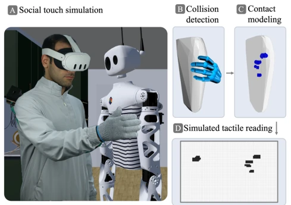
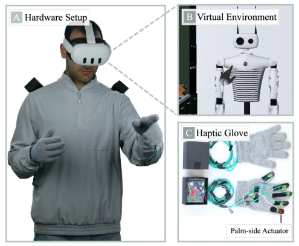
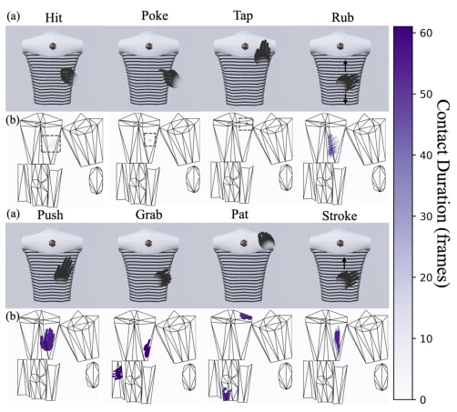
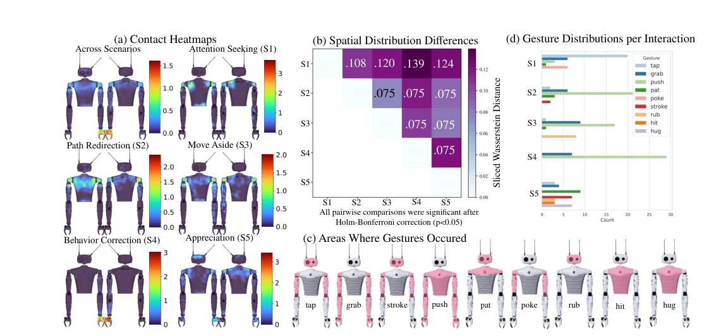
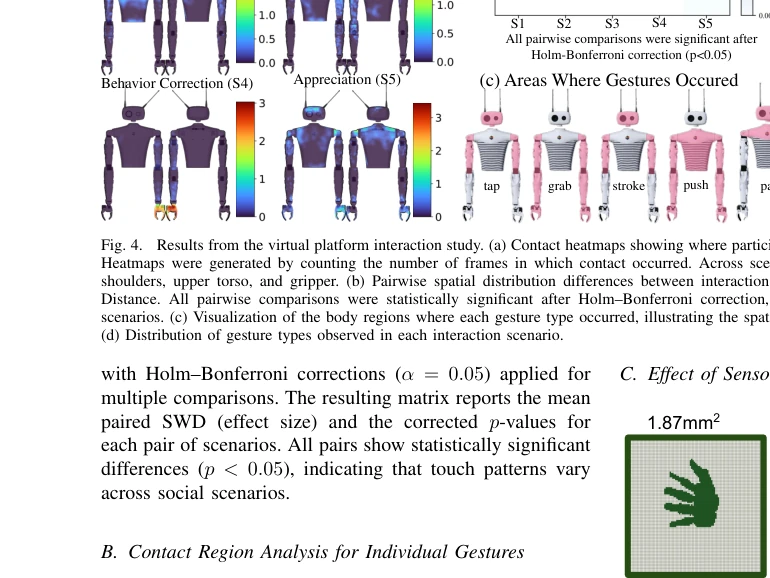
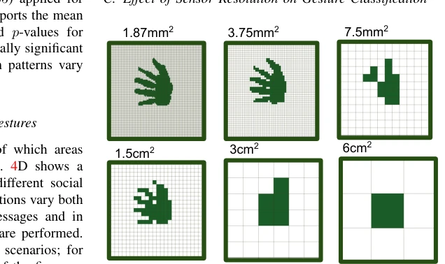
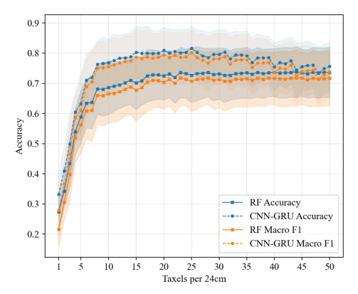

This paper attempts to break the "hardware-first" curse of tactile perception design and instead adopts a "demand-driven" approach. The authors use VR simulation to replace physical machines, collect contact data between humans and virtual robots, and then reverse-engineer the sensor layout. This strategy is quite clever, saving the cost of repeated hardware prototyping and avoiding engineering feasibility dominating the design [4], [5]. However, the problems are also obvious: the tactile sensation in VR is after all not real touching, and only binary contact signals are used, ignoring force perception and pressure distribution, which may be too coarse for emotional interaction [28]. In addition, the experiment was conducted only on the Reachy robot, making it difficult to directly generalize to other forms. However, providing specific quantitative metrics of 18 taxel/24cm is still valuable for engineering implementation. Overall, this is an attempt at a paradigm shift from "making sensors" to "defining needs"; although it does not fully solve the virtual-real gap, it provides a quantifiable baseline for future robot skin design and is worth further exploration in richer tactile modalities.
Existing spHRI tactile system designs are mostly hardware-driven [4], [5], meaning sensors are built first and then algorithms are adapted, leading to limited coverage and resolution, and datasets are strongly coupled to specific hardware [8]. Full-body haptic skin is expensive and has a long customization cycle, and hardware constraints limit perception capabilities [6]. Although social touch is crucial in human communication [3] and can enhance trust and familiarity [13], [14], there is still a lack of quantifiable standards in human-robot interaction. Existing research mostly relies on specific hardware to collect data [18], making it difficult to transfer to other forms. This paper aims to decouple data from hardware, clarify "what needs to be perceived" before manufacturing, and avoid hardware constraints limiting interaction naturalness. By collecting natural interaction data through a VR platform, perception needs under different forms can be explored, rather than passively adapting to existing sensors, thereby reducing R&D costs and improving interaction quality.
The overall process is divided into VR data collection, contact reconstruction, simulation, and demand derivation. First, a Unity VR platform is built, where users wear Meta Quest 3 and haptic gloves to interact with the virtual Reachy robot [2]. High-precision contact geometry is reconstructed offline through sphere-triangle collision detection [1]. Subsequently, contact data is mapped to the robot surface UV space, simulating tactile grids with different resolutions, where the arm is approximated as a cylinder. The dataset is divided into two stages: the first stage identifies 9 types of gestures through natural interaction, and the second stage collects 8 types of gestures in a controlled manner for resolution analysis. Finally, a classifier is used to evaluate recognition accuracy under different taxel densities to derive the optimal layout. This method allows adjusting resolution and layout before hardware manufacturing, achieving a demand-driven design process and supporting reuse on different robot forms.

Fig. 1. Our framework collects collision data between a user and a virtual robot, enabling high-resolution contact extraction. (A) A user interacting with a virtual robot. (B) The user’s hand contact model decomposed into spheres and the convex hull of the robot’s upper arm mesh. (C) Sphere–triangle collision detection used to identify contact regions; circles indicate areas of contact. (D) Simulated sensor readings after processing the detected collisions.

Fig. 2. (A) A user wearing all the system hardware. We use a Meta Quest 3 headset, and (C) custom haptic gloves with the control circuitry mounted on the shoulder to reduce hand-mounted weight. The linear resonant actuator will vibrate upon virtual contact. The user can (B) see and physically interact with a virtual robot within the VR environment.

Fig. 3. Display of gestures and their resulting UV maps. (a) Demonstration of a gesture performed in VR on Reachy’s torso. Gestures like hit, poke, and tap generally have shorter contact durations thus the contact is highlight via the outlined box(b) Corresponding frame of the UV map showing the contact generated by the gesture. The Mesh is unfolded for visualization thus there are multiple islands
An open-source VR gesture dataset containing 5520 trials with 18 participants was constructed. Random Forest and CNN-GRU models were used to evaluate classification performance. Experiments found that as resolution increases, accuracy increases rapidly, saturating at approximately 18 taxel/24cm (approximately 1.3 cm²/taxel) [6]. Contact heatmaps show shoulders, upper torso, and gripper are high-frequency contact areas [4]. Touch distribution varies significantly across different scenarios (SWD analysis). Results indicate that under binary contact encoding, medium resolution is sufficient to meet most gesture recognition needs. This provides specific guidance for the Reachy robot's skin design and also validates the effectiveness of VR data. The experiments covered 5 social scenarios, including seeking attention and expressing gratitude, ensuring data diversity.

Fig. 4. Results from the virtual platform interaction study. (a) Contact heatmaps showing where participants touched the robot in each interaction scenario. Heatmaps were generated by counting the number of frames in which contact occurred. Across scenarios, the highest contact density occurred on the shoulders, upper torso, and gripper. (b) Pairwise spatial distribution differences between interaction scenarios, quantified using the Sliced Wasserstein Distance. All pairwise comparisons were statistically significant after Holm–Bonferroni correction, indicating that touch distributions differed across scenarios. (c) Visualization of the body regions where each gesture type occurred, illustrating the spatial location of different touch gestures on the robot. (d) Distribution of gesture type

Fig. 4C provides a coarse visualization of which areas were contacted for each gesture, while Fig. 4D shows a histogram of the gestures used across the different social scenarios. The results suggest that the distributions vary both in the gestures used to convey different messages and in the areas of the robot where those gestures are performed. However, some gestures appear across most scenarios; for example, push and tap are used in four out of the five sce- narios. Overall, we observe nine gestures in total, suggesting that these gestures are important to capture and encode within this interaction context. From a sensor design perspective, the tactile sensing system should encode enough information to distinguish between the gestures observed in the dataset. However, if engineering con

Fig. 5. Example of sensor output of differing sensor resolutions. This experiment evaluates how sensor resolution affects gesture recognition to inform tactile sensor design. Re- searchers often prefer to use tactile skins with lower spatial resolution to reduce the cost, but hope to remain capable of recognizing frequently observed gestures with the sensor. To understand what is a “sufficient” resolution for tactile skin, we simulate the tactile signals generated by sensors with different spatial resolution, and evaluate the accuracy of gesture classification across all those sensors. 1) Data Processing: Following the pipeline described in Section IV-C to generate tactile readings from the virtual contact data, the data was clipped or padded to 50 frames as the raw tactile reading. To sim
其他图片Other Figures

Fig. 6. Mean LOSO cross-validation accuracy and macro F1-score for the RF and CNN-GRU classifiers across 50 tactile sensor resolutions. Shaded regions denote standard deviation across participants. Performance increases rapidly with finer spatial resolution before saturating at approximately 18 taxels per 24 cm, suggesting diminishing returns from additional taxels.